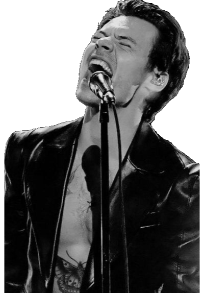

Ex integrante de la famosa banda britanica-irlandesa llamada One Direction. Un año despues de que el ahora tambien ex integrante de One Direction tomara la decision de dejar la banda, todos los integrantes de One Direction decidieron tomar un "descanso" como banda, es por esto que la mayoria de sus integrantes tomaron su carrera como solistas, este es el caso de Harry Styles.
Harry Styles con su musica no solo inspira almas y corazones, tambien es su actitud y caracter tan carismatico y amoroso que tiene con las personas lo que han hecho que llegue a ser tan fomoso. Harry Styles con sus canciones expresa sus sentimientos, y no solo eso, tambien hace que muchas personas se sientan identificadas con las letras de sus canciones.
Nominaciones |
|
||
|---|---|---|---|
Albumes |
|
Video mas reciente |
Treat People With Kindness, actualmente con 34M de visitas |